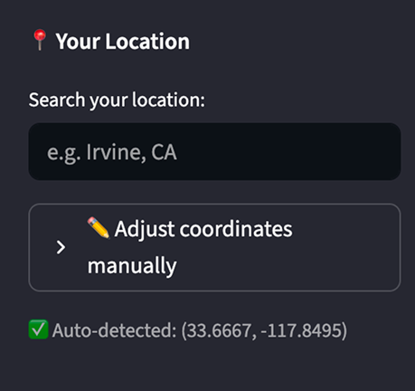
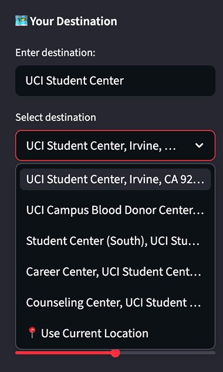
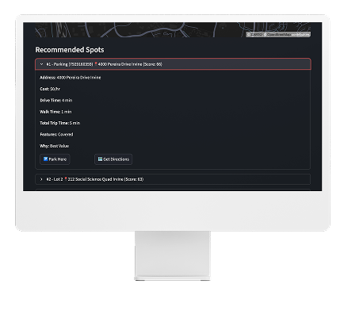
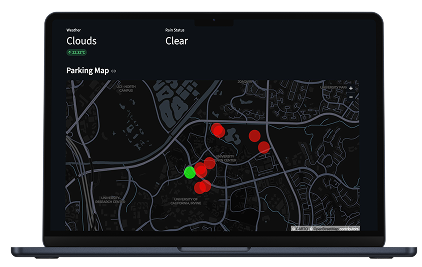

Finding parking locations that fit your needs is a common struggle that people run into daily.
People are often seeking convenience along with a multitude of constraints such as cost, accessibility, distance, etc, something which most existing apps don't provide.
Parking decisions are multi-variable and dynamic, but most tools treat them as static location search problems.
Our Goals
1. Build a ranking system, not just a map
2. Combine multiple real-world signals (cost, distance, availability, weather) in order to provide personalized recommendations
3. Make results interpretable and visually clear
System Design
A layered architecture connecting user inputs to ranked parking recommendations.
click card or use arrows
The system ingests data from multiple external APIs, including GeoAPIfy for geocoding and location autocomplete, OpenStreetMap for parking metadata, and OpenWeather for contextual signals. Because each API returns data in different formats and levels of completeness, a normalization layer standardizes fields such as location, cost, and availability before downstream processing.
We built our ranking engine to compute a weighted score for each parking option based on cost, walking distance, estimated travel time, and contextual signals such as weather. The system is modular, separating data retrieval from scoring logic, allowing ranking weights and features to be easily adjusted.
We utilized PostgreSQL with PostGIS to store parking data and user interaction history. PostGIS enables efficient spatial queries such as distance calculations and proximity filtering, which are critical for ranking results. Persisting historical data also allows the system to incorporate user preferences into future recommendations.
Highlighted Features


Location Detection & Destination Search
Detects user’s current location from browser GPS & Autocomplete-based search using GeoAPIfy API with real-time geocoding to convert user input into coordinates.
Ranking Engine
Multi-factor scoring system that weights cost, distance, travel time, and contextual signals to produce ranked parking recommendations. Refined user experience by connecting our ranked options to Google Maps.

Real-Time Data Integration
Aggregates live data from OpenStreetMap and OpenWeather APIs to dynamically adjust recommendations based on weather and traffic conditions.
User Context Awareness
Utilizes session based logins to incorporate user preferences and historical lessons to personalize ranking outputs.
Map UI
PyDeck-based visualization rendering ranked parking options spatially relative to the destination.

Key Challenges
1. Designing a Meaningful Ranking Algorithm - Balancing multiple competing factors (cost vs distance vs convenience) required designing a scoring system that was both interpretable and tunable.
We implemented a weighted model that could be easily adjusted, allowing experimentation with different tradeoffs. We wanted our ranking algorithm to encompass both contextual signals and user history to provide the most optimal recommendations.
2. Normalizing and Handling API Data - We found that real-world API data, is often complex and not user friendly. Each API also returned data in different formats and levels of completeness (ex: missing cost data or inconsistent location formats).
We designed a normalization layer to standardize fields and handle missing values gracefully, ensuring consistent inputs for the ranking engine.
Results
✮Improved realism of recommendations using real-world APIs
✮Transitioned from simulated to a production-like data pipeline
✮Improved user experience with auto-fill search features and clear, interactive visualization
✮Built a system that mimics real decision-making (not just static filtering)
✮Designed for scalability (modular pipeline, extensible ranking)
Reflection
This project shifted my perspective from building feature-based applications to designing systems.
Further, through developing both backend routes and frontend designs, this project taught me to think about projects in a full-stack scope and to analyze how each dev layer interacted with one another.
I gained experience integrating multiple, real data sources, designing scoring algorithms, and working with geospatial data. It also reinforced the importance of handling imperfect real-world data and making practical tradeoffs in system design.